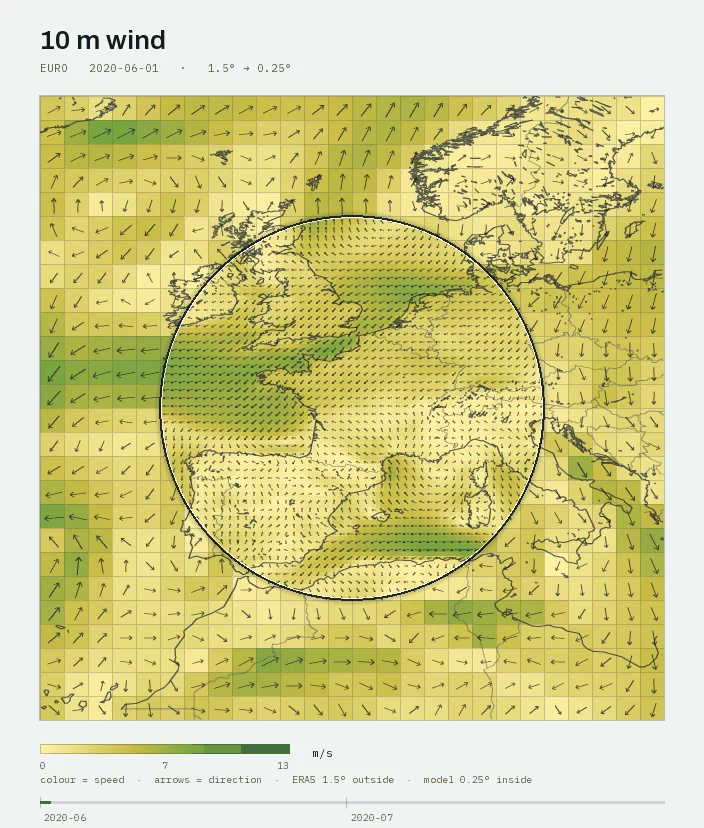
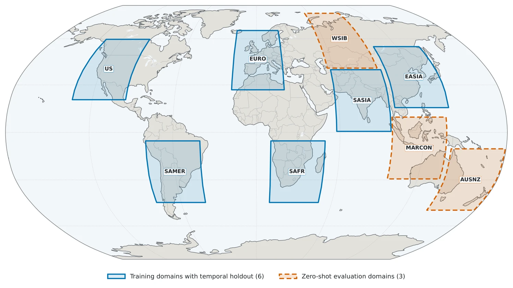

Research note · Graph-based climate downscaling
Zameen: learning local weather from the shape of the land.
A downscaler should learn a relationship it can reuse. Zameen asks whether differences in terrain can provide that relationship across unfamiliar geography.
The question
Regional weather analysis needs detail that coarse climate fields cannot resolve. A learned downscaler can reconstruct that detail where it has been trained, but performance in familiar geography does not establish that it will transfer elsewhere.
I represent the weather field as three levels of lattice graphs and condition the finer-scale response on differences between neighbouring terrain descriptors. The aim is to make the model learn how terrain changes local weather, while limiting shortcuts tied to a region’s absolute elevation datum.
Zameen reconstructs the surface state for the same day as its input. It does not advance weather forward in time.


{kind=link}
The method
A hierarchy matched to the resolution change
The model maps seven surface variables from a 26 × 26 grid to 156 × 156. Its three graph levels operate at 26², 78², and 156² nodes. A graph-Fourier operator supplies regional context at the coarsest scale, while message passing resolves progressively finer terrain structure.
Terrain differences, conditioned on flow
A lossless Laplacian pyramid separates regional terrain from finer residual bands. Edge encoders use relative terrain descriptors and physical displacements. Attention couples the atmospheric state to terrain gradients, allowing the model to represent a response to wind interacting with slopes.
A correction to a known baseline
The network predicts a residual over bicubic interpolation. Its readout starts at zero. A coarse-mean projection is followed by a bounded learned refinement, so final conservation is checked as a diagnostic rather than guaranteed exactly.
Penalizing missing and invented structure
I combine pixel, spectral, and gradient objectives. The spectral term compares log power over the full resolvable spectrum, assigning equal cost to doubling or halving power. The selected configuration has 57.6 million parameters.
The experiment
Training uses daily ERA5 from 1981–2015, with 2016 for model selection and 2017 and 2020 as independent test years. Six domains contribute training data: South Asia, East Asia, Europe, the contiguous United States, South America, and southern Africa.
Australia–New Zealand, the Maritime Continent, and western Siberia are held out geographically. Evaluation uses no fine-tuning or checkpoint reselection, although each region’s historical climatology remains available for normalizing dynamic fields.
The 1.5° inputs are constructed by averaging 6 × 6 blocks of the 0.25° target. This isolates reconstruction in a perfect-model experiment; it does not yet test correction of bias from an independent climate model.

{kind=link}
Results &
what they mean
On the 2020 test year, Zameen improves on bicubic interpolation for all seven variables when averaged over either the six fitted domains or the three unseen domains.
| Evaluation geography | Bicubic | Zameen |
|---|---|---|
| Six fitted domains | 1.022 K | 0.283 K |
| Three unseen domains | 0.795 K | 0.428 K |
Variance-normalized pooled MSE skill relative to bicubic is 0.864 [0.862, 0.866] on fitted domains and 0.619 [0.617, 0.620] on unseen domains. Here, zero matches bicubic and one is perfect. The brackets are 95% confidence intervals from 2,000 paired seven-day block bootstrap resamples.
The spectral result adds a different test. Across fitted domains, each variable retains an effective resolution of 56 km, the target-grid Nyquist scale. On unseen domains, mean effective resolution ranges from 136 to 199 km. Pixel accuracy transfers more reliably than the finest-scale variance.
My contribution
I implemented the graph downscaling models, the multi-scale reasoning setup, and the spectral–structural objective. The work connects architecture choices to checks on reconstructed fields, spatial error, and spectral fidelity.
The project was conducted and funded through KAIST’s Spring 2025 Undergraduate Research Program, under the supervision of Professor Hyungjun Kim and doctoral researcher Eunhan Goo.
Limits &
next questions
The evidence covers one 6× resolution change, seven surface variables, nine domains, two test years, and one selected training seed. The model is deterministic and excludes precipitation. Operational use would also need to account for coarse-product bias.
The clearest next question is spectral transfer: how can a model retain fine-scale variability in a new region as well as it retains lower pixel error? The Maritime Continent is a useful test case, where the finest-scale power falls below half the target variance.
For me, this is a useful reminder to inspect what each metric can establish. A field can agree at large scales and still lose the local structure that motivated downscaling.